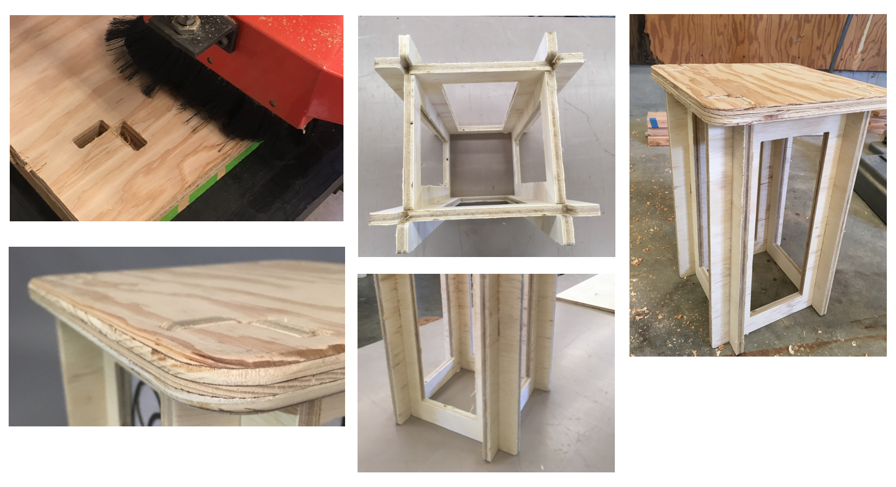
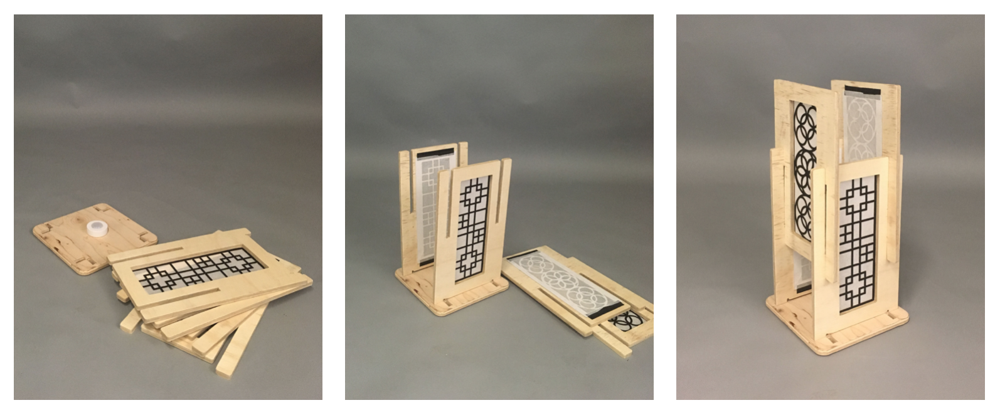
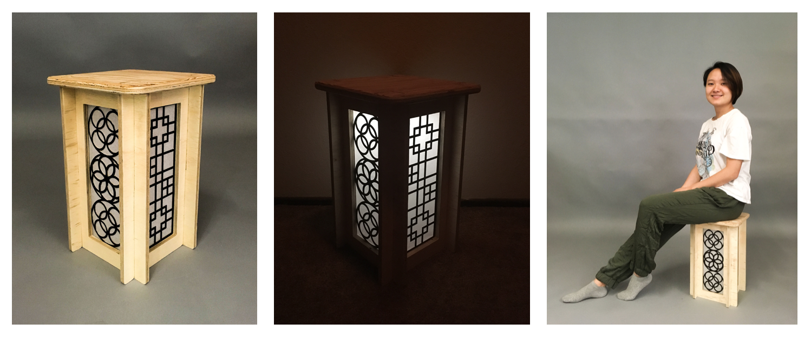

Inspiration and Sketches | Adobe Photoshop
For this project, I was hoping to make something for temporary housing. It should have multiple functionalities, and should also be easily assembled, and compacted. I was inspired by the Japanese wood lamp as shown on the top left. I want my stool to have lighting feature and decoration purposes.
 Assemble and Refine | Plywood
I used 1/2” plywood for stool “legs,” and 3/4” for the top. I also did a fair amount of sanding to refine the edges so that the pieces are able to slide into each other smoothly. I also used a router to smooth the edges of the top.One big challenge for my design is to figure out the exact width of the gaps since the pieces interlock with each other. I designed using Adobe Illustrator and cut it on the CNC machine.
